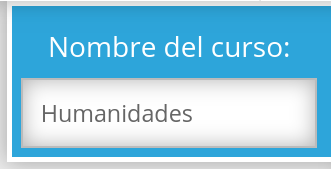
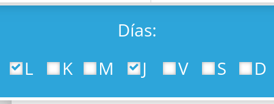
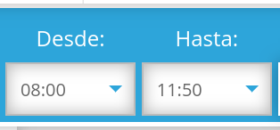
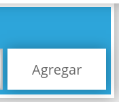
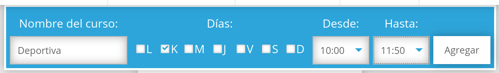
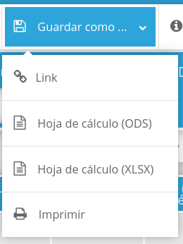
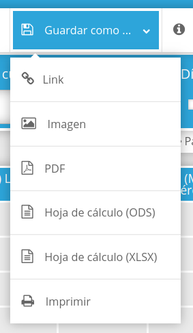

A continuación se brindará una breve explicación sobre el proceso que se debe seguir para poder guardar o bien crear un nuevo horario. Para garantizar un correcto resultado se recomienda al usuario seguir al pie de la letra las siguientes indicaciones.
1) Ingresa el nombre del curso que quieras almacenar.

2) Selecciona el día que se impartirá dicho curso.

3) Selecciona una hora de inicio y de fin del curso.

4) Da click en el botón "Agregar".

5) Repite el proceso las veces que sean necesarias.

6) Cuando tu horario esté listo para guardarse, selecciona la opción del menú "Guardar como..."y puedes elegir entre alguna de las siguientes opciones:

